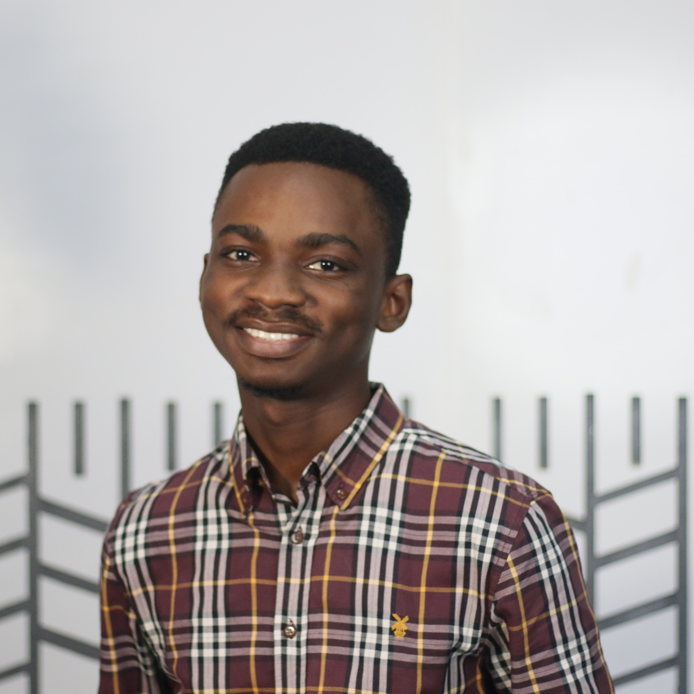
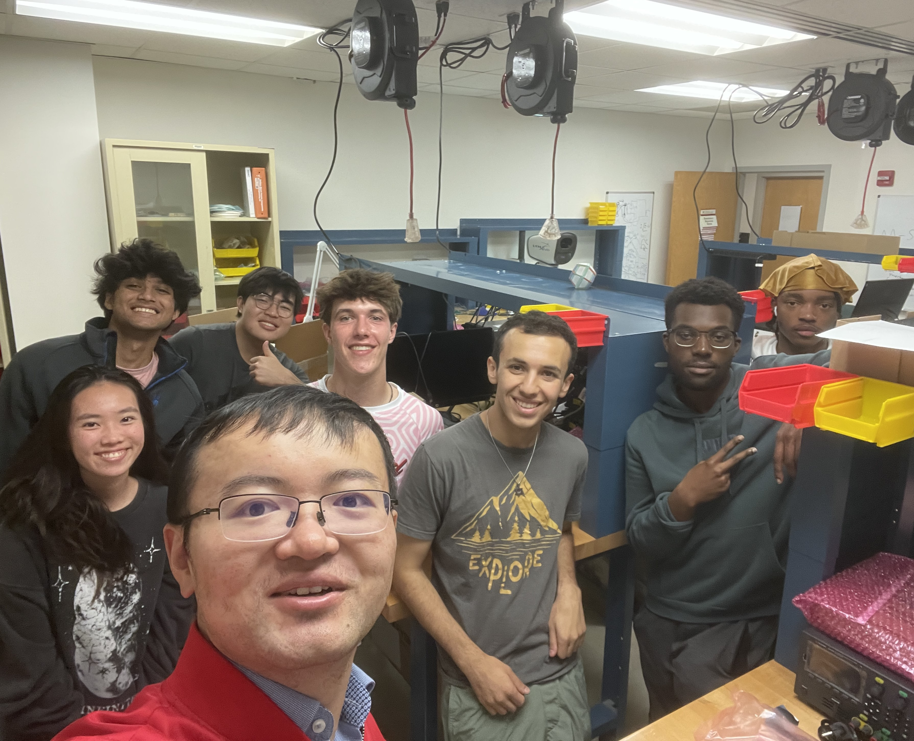

Maryland Shaping Energy and Minds (M-SEM)
Students work with me for their growth and group development.
In the early years, I provide well-defined projects to help them build technical skills, habits, and a professional mindset—in other words, to do smart things smartly. Later in senior years, the goal is for them to catch a 'Tuna’—tackling big, ambitious challenges—after learning how to catch sea bass and Branzino in a systematic and sustainable way.
I am more than happy to mentor those who aspire to become impactful researchers, exceptional engineers, and lifelong learners.
|
|
Junshan Liu
Multi-Phase Current-Mode Power Amplifiers
Junshan joined the group in Fall 2024 as a first-year Ph.D. student in the Department of Electrical and Computer Engineering at the University of Maryland, College Park. He received a B.Sc. degree in electrical engineering from Southwest Jiaotong University in 2021 and a M.S. degree from the State Key Laboratory of Electrical Insulation and Power Equipment, School of Electrical Engineering, Xi'an Jiaotong University in 2024. His current research focuses on multi-phase current-mode power amplifier. During his spare time, he enjoys traveling and playing computer games and sports.
|
Junshan Liu and Xin Zan, “Modeling, Analysis, and Design of Three-Phase Current-Mode Power Amplifiers,” 2025 IEEE 26th Workshop on Control and Modeling for Power Electronics (COMPEL), Knoxville, TN, USA, 2025, pp. 1-8.
|
 |
Temiladeola 'Temi' Oladugba
Wide-Range Switched-Mode Power Amplifiers
Temi joined the group in Fall 2024 as a first-year PhD student in the Electrical and Computer Engineering department at the University of Maryland, College Park. He received his B.S. degree in Electrical and Electronics Engineerings from the University of Lagos, Lagos, Nigeria. Prior to beginning his PhD at the University of Maryland, he worked briefly as an embedded systems engineer, developing remote monitoring and control systems for residential solar power systems. Currently, his research focuses on high-frequency power converters that can work over a wide-range of load impedances and power levels.
|
Temiladeola Oladugba and Xin Zan, “Wide-Range Current-Mode Class-D Power Amplifier,” 2025 IEEE 26th Workshop on Control and Modeling for Power Electronics (COMPEL), Knoxville, TN, USA, 2025, pp. 1-8.
|
 |
GEMSTONE Undergraduate VISTA Team
Virtual Interactive STEM Teaching Aids
The VISTA Team is composed of seven undergraduate students from diverse academic backgrounds, working under the guidance of Prof. Zan for three years until graduation. Our project focuses on developing remote access to physical labs, promoting inclusion, equity, and diversity in STEM education.
The team members, listed from left to right in the accompanying photo, are: Nickey Zhang (Letters and Sciences), Harshil Agarwal (Computer Science), Daniel Kim (Computer Science), Alexander Campbell (Computer Science), Benjamin Nathan (Computer Engineering), Ayolani Akinwale (Computer Science), and Markell Morris (Mechanical Engineering). Together, we bring a multi-disciplinary approach to advancing remote learning in STEM fields.
|
High School Students:
Aryan Agarwal (Montgomery Blair High School, Summer 2024)
Paul Augustine (Montgomery Blair High School, Summer 2024)
|